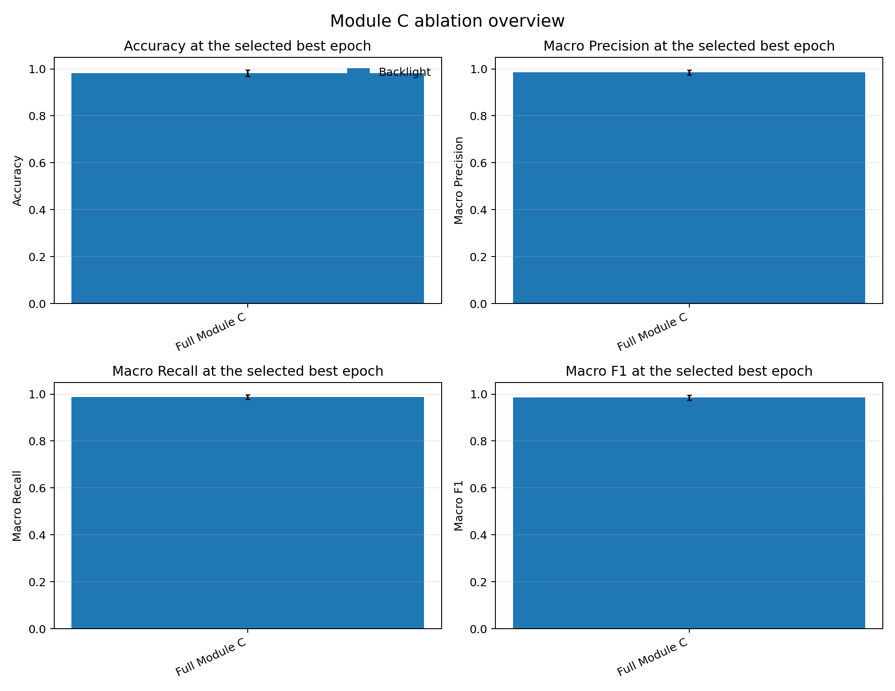
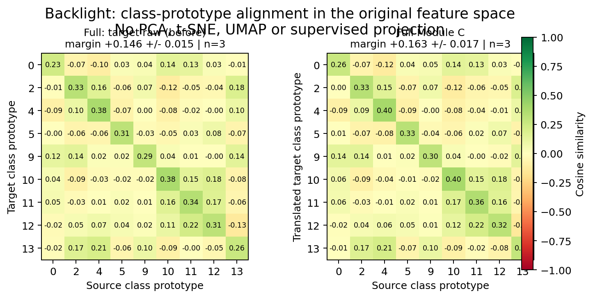

| variant | domain | runs | accuracy | macro precision | macro recall | macro F1 | F1 95% CI | mean errors / validation size | mean per-run accuracy Wilson 95% CI |
|---|---|---|---|---|---|---|---|---|---|
| Full Module C | Backlight | 3 | 0.981981981981982 | 0.9851851851851853 | 0.9876543209876544 | 0.9850355405910961 | 0.014665170220725781 | 0.67 / 37.00 | [0.8765, 0.9968] |

